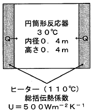

令和6年度 問34 化学プロセス
内径0.4 m、深さ0.4 mの円筒形の反応容器に原料を隙間なく充填し、側面から110℃で加熱している。反応容器内は十分に撹拌されているので、濃度は均一であり、温度は一様に30℃である。 総括伝熱係数（総括熱伝達係数）（U）が500 W / (m²K) であるとき、時間当たりの入熱量（kJ/h）は、次のどの値に最も近いか。ただし、1 W=1 J/sとする。

①
126,700
②
99,500
③
72,400
④
27,100
⑤
23,000
正答
③ 72,400
正答は3番です。
伝熱量（入熱量） $Q$ は、次の基本式で求められます。
$Q = U \cdot A \cdot \Delta T$
1. 伝熱面積 $A$ を求める
「側面から加熱している」との記述より、円筒の側面積を計算します。
$A = (\text{底面の円周}) \times (\text{深さ}) = (0.4 \times \pi) \times 0.4 = 0.16\pi \approx 0.5027 \text{ m}^2$
2. 温度差 $\Delta T$ を求める
$\Delta T = 110 \text{ ℃} - 30 \text{ ℃} = 80 \text{ K}$
3. 伝熱速度（ワット）を求める
$Q = 500 \text{ W/(m²K)} \times 0.5027 \text{ m}^2 \times 80 \text{ K} = 20,108 \text{ W (J/s)}$
4. 時間当たりの熱量 [kJ/h] に変換する
1時間 = 3,600秒、1 kJ = 1,000 J より：
$Q_{h} = 20,108 \text{ J/s} \times 3,600 \text{ s/h} \times 10^{-3} \text{ kJ/J}$
$Q_{h} \approx 20.108 \times 3,600 = 72,388 \text{ kJ/h}$
最も近い値は72,400となります。